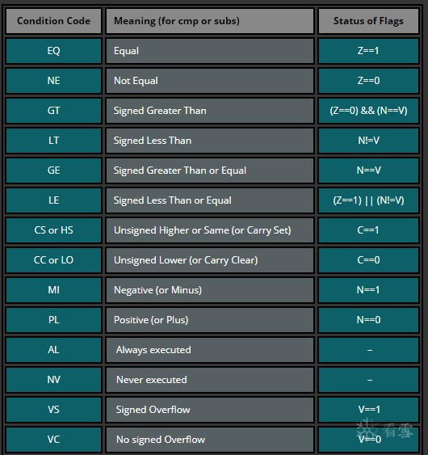

---恢复内容开始---
汇编语言是一种程序设计语言，arm处理器是一种16/32位的嵌入式RISC微处理器。一开始我把这混为一谈了。ARM汇编的特点：汇编语言，又叫助记符语言。 1）大多数指令都是单周期指令；2）大多数指令都是可以条件执行的。
处理器由37个寄存器，其中为31个通用寄存器，然后有6个为状态寄存器，这些寄存器都是32位的，但是状态寄存器只利用了其中的12位。
（1），首先先说到寄存器。它是CPU的重要组成部分。是有限存贮容量的高速存贮部件。主要用来暂存指令，数据，地址。分类也是有很多，有通用寄存器，专用寄存器，控制寄存器。主要参考汇编的寄存器.这是按照功能分类。寄存器主要是2类，电路内部和充当外部接口。
通用寄存器：
1）.未分组（未备份）寄存器：R0~R7。未备份寄存器没有被系统用于特别的用途，任何可采用通用寄存器的应用场合都可以使用未备份寄存器。
2）.分组寄存器：R8~R12
R13_<mode> 其中<mode>是usr、svc、abt、und、irq和fiq的一种。通常用作堆栈指针，始终指向堆栈的顶部。程序初始化R13，使其指向该模式专用的栈地址。进入此模式，则保存在此中，退出则弹出，实现程序现场保护。
R14：连接寄存器（LR），有两种功能:1..自己的物理R14中存放当前子程序的返回地址。2..发生异常中断，R14的值可能与将返回的地址有一个常数的偏移量。
R15:程序计数器(PC):用于控制程序中指令的执行顺序。正常运行时，PC指向CPU运行的下一条指令。每次取值后PC的值会自动修改以指向下一条指令，保证了指令按一定的顺序执行。当程序的执行顺序发生改变(如转移)时，需要修改PC的值。
状态寄存器（条件码寄存器)
作用：用以标记CPU的工作状态程序。存放两类信息一种是体现当前指令执行结果的各种状态信息（条件码），另一种是存放控制信息。CPSR(R16):当前程序状态寄存器，用来保存ALU中的当前操作信息，控制允许和禁止中断、设置处理器的工作模式等。SPSRs：五个部分的程序状态寄存器，用作异常处理，保存CPSR值，有四个条件代码：（1）N：正负，N=1,结果为负，N=0，结果为正或0.（2）Z：零，Z=1结果为0，Z=0，结果非零。（3）C：进位，加法产生进位则C=1，不然为C=0.借位，减肥运算产生了借位则C=0，否则C=1。（4）V：溢出，V=1，有溢出，V=0，无溢出。其中PSW称为标志寄存器，是一个16位的存放、控制标志的寄存器，主要呢用来反映处理器的状态和ALU运算结果的某些特征及控制指令的执行。
地址空间：程序正常执行时，每执行一条ARM指令，当前指令计数器增加4个字节。地址索引 ：ARM 指令中的地址索引也是指令的一个功能，索引作为指令的一部分，它影响指令的执行结果。地址索引分为前索引(在指令执行前把偏移量和基址相加/ 减，得到的值作为寻址的地址）、自动索引（自动变址，有时为了修改基址寄存器的内容,使之指向数传送地址，可使用这种方法自动修改基址寄存器)和后索引(后变址，后索引就是用基址寄存器的地址值寻址，找出操作数进行操作，操作完成后，再把地址偏移量和基址相加/ 减，结果送到基址寄存器，作为下一次寻址的基址).
汇编语言
[汇编语言基础]，计算机系统包括硬件和软件两部分。
1.汇编指令格式<opcode>{<cond>}{S}<Rd>,<Rn>{,<OP2>},格式中<>的内容必不可少，{}中的内容可省略.
<opcode>:表示操作码. {<cond>}:表示指令执行的条件域. {S}:决定指令的执行结果是否影响CPSR的值，使用该后缀则指令执行的结果影响CPSR的值，否则不影响. <Rd>:表示目的寄存器. <Rn>:表示第一个操作数，为寄存器. <op2>:表示第二个操作数，可以是立即数、寄存器或寄存器移位操作数.
然后其中指令可选后缀，如果含有！，指令执行的结果地址值改变，指令执行后的值=执行前的值+地址偏移量。例如 B R0,[R2,#1]! 指令执行后，R2=R2+1
2.指令的条件执行
3.ARM指令分类
| 指令功能描述 | 助记符 | 指令功能描述 | |
|---|---|---|---|
| ADC | 带进位加法指令 | MRC | 从协处理器寄存器到ARM寄存器的数据传输指令 |
| ADD | 加法指令 | MRS | 传送CPSR或SPSR的内容到通用寄存器指令 |
| AND | 逻辑与指令 | MSR | 传送通用寄存器到CPSR或SPSR的指令 |
| B | 分支指令 | MUL | 32位乘法指令 |
| BIC | 位清零指令 | MLA | 32位乘加指令 |
| BL | 带返回的分支指令 | MVN | 数据取反传送指令 |
| BLX | 带返回和状态切换的分支指令 | ORR | 逻辑或指令 |
| BX | 带状态切换的分支指令 | RSB | 逆向减法指令 |
| CDP | 协处理器数据操作指令 | RSC | 带错位的逆向减法指令 |
程序返回 程序结束后，将CPU的控制权交给调用它的程序
4.arm寻址方式：8种方式：1.立即数寻址 Mov AL, 12H （12H 是一个立即数）2.寄存器寻址:(1)Mov B,BX(源操作数是寄存器）;(2)Mov BX,B（目的操作数是寄存器）;(3)Mov AX,BX（两者都是寄存器）3.寄存器间接寻址Mov AX, [DI] （DI 是地址） 4.寄存器移位寻址Mov AX，[SI + 123H] （寄存器 + 立即数）5.基址变址寻址 Mov AX, [AX + SI] （寄存器 + 寄存器）6.多寄存器寻址7.相对寻址 Mov AX, [BX + SI + 123H] （寄存器 + 寄存器 + 立即数）8.堆栈寻址（1）. 进栈出栈；（2）. PUSH指令
【idata】 //常量 【bx】 //变量 （结合inc访问由ds开始的连续的一段内存） 【bx+idata】 //变量+常量 （数组） 【bx+si】 //变量+变量
5.逻辑运算指令，'AND/ORR/EOR{cond} {s} <Rd>, <Rm>, <operand>'， 'BIC{cond} {s} <Rd>, <Rm>, <operand>'。这只是其中一部分，主要参考arm最常用的指令。
6.数据加载与存储指令:1）. LDR/STR字数据加载/存储指令,2）. LDRB/STRB字节数据加载/存储指令,3）. LDRH/STRH半字数据加载/存储指令,4）. LDM/STM批量数据加载/存储指令,5）. SWP字数据交换指令.
---恢复内容结束---